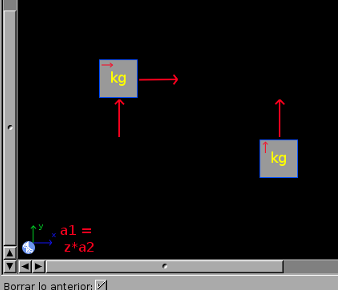
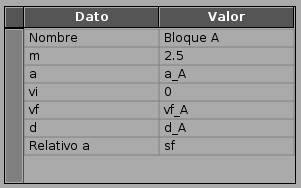
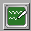
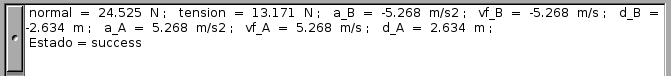

Dado un problema, se debe construir un diagrama en la pizarra de FísicaLab. Agregando los elementos apropiados a esta. 
Los elementos en cada módulo permiten construir una gran variedad de problemas.
La documentación provee una gran cantidad de ejemplos sobre como hacer esto,
incluyendo una descripción completa de cada elemento.
A continuación agregue la información para cada elemento en la pizarra. 
Hay una gran cantidad de factores de conversión disponibles en cada módulo.
Puede agregar estos utilizando el carácter @ o mediante
el menú contextual. También puede utilizarse la notación científica.
Una vez agregados los elementos y la información, de un clic en el botón resolver. 
 Obtenga la solución en el visor de texto, cada dato se muestra con sus correspondientes dimensionales. Y, de ser necesario, otros mensajes útiles.
FisicaLab is free software; you can redistribute it and/or modify it under the terms of the GNU General Public License as published by the Free Software Foundation; either version 3 of the License, or (at your option) any later version.
{kind=link}
{kind=link}
{kind=link}
{kind=link}
{kind=link}